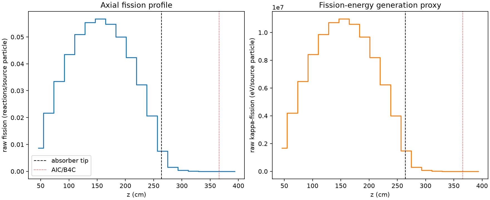
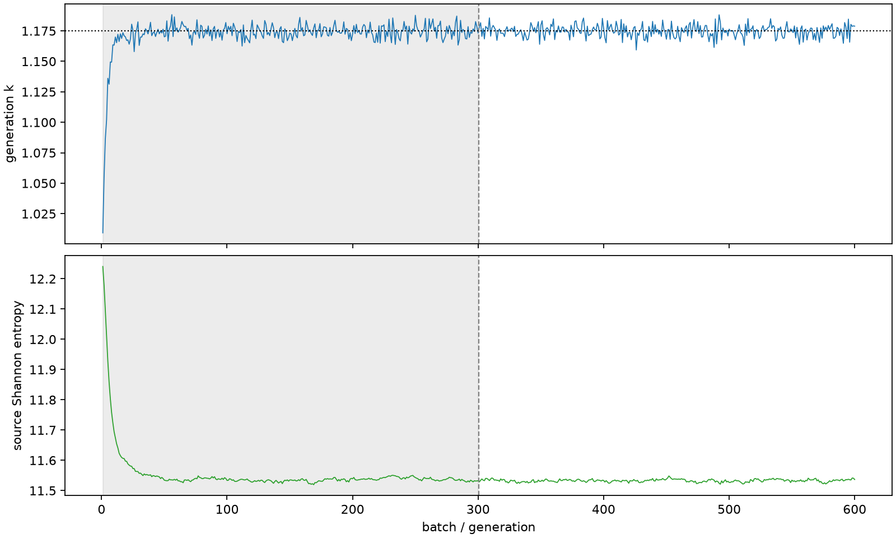

| field | value |
|---|---|
| experiment | V2-STAGE_32_OGRENCI_04-0003 |
| k | 1.1752180241862118 |
| MC standard error | 0.0001654064761257323 |
| seconds | 1433.8880158290012 |
| acceptance | not_assessed |
| convergence | review_required |
Completed is output integrity only; physical and statistical review required. Zero tallies do not prove zero production or zero uncertainty.
| diagnostic | value |
|---|---|
| geometric fuel voxels | 5280 |
| zero fission tally voxels | 211 |
| low signal fuel voxels | 1068 |
| low signal fission share | 6.338191754608055e-05 |
| low signal kappa share | 6.340745972592367e-05 |
| important fission share | 0.9500585214248668 |
| previous filter included | 4212 |
| duration estimate s | 1562.5173488400023 |
| actual minus estimate s | -128.6293330110011 |
| fission relative MC error | statistics |
|---|---|
| all_geometric_fuel | {"voxels": 5280, "positive_mean_voxels": 5069, "zero_mean_voxels": 211, "undefined_relative_error_voxels": 211, "median": 0.011262375731382291, "p95": 0.7615268917563833, "maximum": 1.0000000000000002} |
| low_signal | {"voxels": 1068, "positive_mean_voxels": 857, "zero_mean_voxels": 211, "undefined_relative_error_voxels": 211, "median": 0.5822878804465389, "p95": 1.0, "maximum": 1.0000000000000002} |
| important_95pct | {"voxels": 2829, "positive_mean_voxels": 2829, "zero_mean_voxels": 0, "undefined_relative_error_voxels": 0, "median": 0.00807139585536371, "p95": 0.01189236161309609, "maximum": 0.014311204016186596} |
| outside_previous_filter | {"voxels": 1068, "positive_mean_voxels": 857, "zero_mean_voxels": 211, "undefined_relative_error_voxels": 211, "median": 0.5822878804465389, "p95": 1.0, "maximum": 1.0000000000000002} |
| kappa_fission relative MC error | statistics |
|---|---|
| all_geometric_fuel | {"voxels": 5280, "positive_mean_voxels": 5069, "zero_mean_voxels": 211, "undefined_relative_error_voxels": 211, "median": 0.011249986933246537, "p95": 0.7605883339648801, "maximum": 1.0000000000000002} |
| low_signal | {"voxels": 1068, "positive_mean_voxels": 857, "zero_mean_voxels": 211, "undefined_relative_error_voxels": 211, "median": 0.5813028137472561, "p95": 1.0, "maximum": 1.0000000000000002} |
| important_95pct | {"voxels": 2829, "positive_mean_voxels": 2829, "zero_mean_voxels": 0, "undefined_relative_error_voxels": 0, "median": 0.008062054101313542, "p95": 0.011879165640795138, "maximum": 0.014297094130939719} |
| outside_previous_filter | {"voxels": 1068, "positive_mean_voxels": 857, "zero_mean_voxels": 211, "undefined_relative_error_voxels": 211, "median": 0.5813028137472561, "p95": 1.0, "maximum": 1.0000000000000002} |
| axial bin | fission share | kappa-fission share |
|---|---|---|
| 1 | 0.018114994320025318 | 0.018115693480566297 |
| 2 | 0.04528338341873752 | 0.04528325832359947 |
| 3 | 0.06969495010591689 | 0.06969464344041953 |
| 4 | 0.09069309916174395 | 0.09069267542398661 |
| 5 | 0.10611180863723613 | 0.10611143711966803 |
| 6 | 0.11541456801848322 | 0.11541393828390797 |
| 7 | 0.11812750430212444 | 0.11812698475265897 |
| 8 | 0.11407621716896219 | 0.11407564141996435 |
| 9 | 0.10411340261234671 | 0.1041128712492426 |
| 10 | 0.08819440530462969 | 0.08819403706399151 |
| 11 | 0.06709086469162948 | 0.0670906611420125 |
| 12 | 0.04295707396276092 | 0.04295701529891112 |
| 13 | 0.015807589987905303 | 0.01580948478991584 |
| 14 | 0.0032761371590772606 | 0.003277279865674462 |
| 15 | 0.000794182428638608 | 0.0007944737800125399 |
| 16 | 0.0001949003342308079 | 0.00019496312900963572 |
| 17 | 4.4342532731950144e-05 | 4.4359309192496937e-05 |
| 18 | 8.544688591184879e-06 | 8.548981604954333e-06 |
| 19 | 1.8633673863953377e-06 | 1.8649383260644129e-06 |
| 20 | 1.6779684200770423e-07 | 1.6820733495059113e-07 |
Histories include the inactive-to-active transition at batch 300. kappa-fission approximates fission energy production, not total heat deposition.

